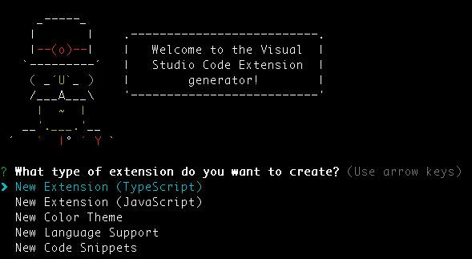
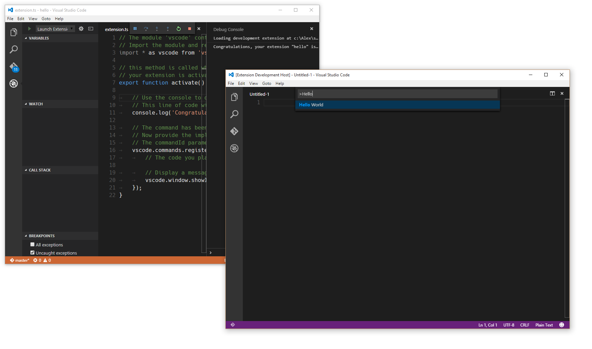
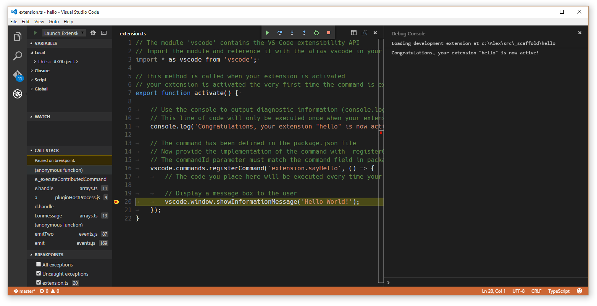
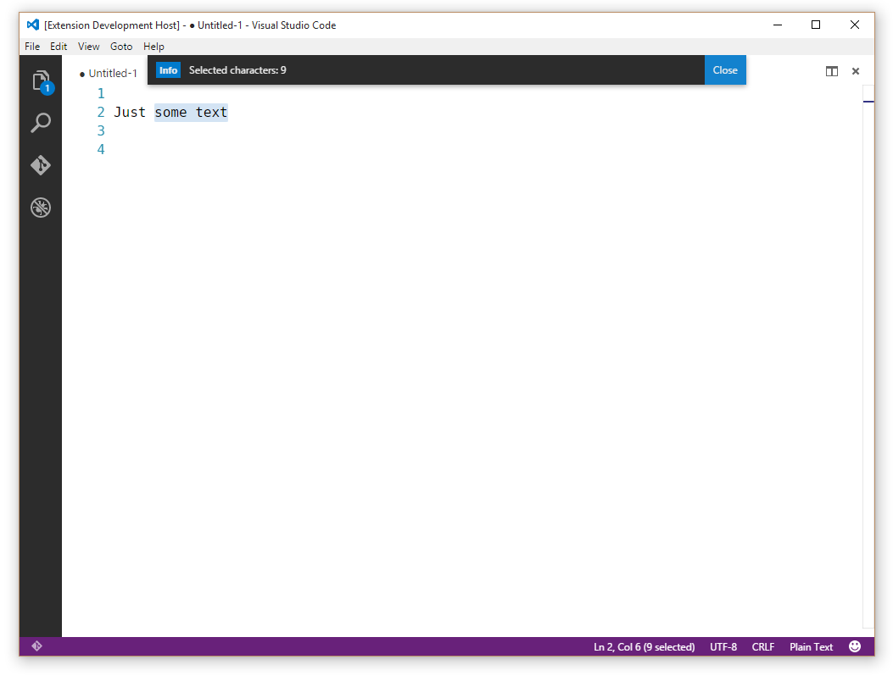

示例 - Hello World Example - Hello World
你的第一个插件 Your First Extension
这篇文档将指引你创建你的第一个插件("Hello World")，并解释基础的VS Code扩展的概念。
这这篇文档的指引下，首先你将会向VS Code中添加一个显示一条"Hello World"消息的插件。稍后你会通过和VS Code编辑器交互来查询用户现在选中的文本。
This document will take you through creating your first VS Code extension ("Hello World") and will explain the basic VS Code extensibility concepts.
In this walkthrough, you'll add a new command to VS Code which will display a simple "Hello World" message. Later in the walkthrough, you'll interact with the VS Code editor and query for the user's currently selected text.
准备 Prerequisites
你需要安装node.js并且确保在$PATH中可用。
You need node.js installed and available in your $PATH.
生成一个新的插件 Generate a New Extension
要想给你的VS Code添加功能，最简单的方法是添加一条命令。每条命令都会注册一个可以通过命令面板或者键盘快捷键调用的回调函数。
我们编写了一个Yeoman生成器来帮助你开始第一步。安装Yeoman和Yeoman VS Code插件生成器来生成一个新的插件开发框架。
npm install -g yo generator-code
yo code
对于hello world插件，你可以选择创建一个TypeScript插件或者JavaScript插件，在这个例子中，我们选择TypeScript。

The simplest way to add your own functionality to VS Code is through adding a command. A command registers a callback function which can be invoked from the Command Palette or with a key binding.
We have written a Yeoman generator to help get you started. Install Yeoman and the Yeoman VS Code Extension generator and scaffold a new extension:
npm install -g yo generator-code
yo code
For the hello world extension, you can either create a TypeScript extension or a JavaScript one. For this example, we pick a TypeScript extension.
运行你的插件 Running your Extension
- 运行VS Code，选择
文件>打开…然后选择你刚才生成的文件夹。 - 按下
kb(workbench.action.debug.start)或者点击调试图标然后点击开始。 - 一个新的VS Code实例将以一种特殊的模式(
Extension Development Host)启动，这个新的实例是可以使用你的插件的。 - 按下
kb(workbench.action.showCommands)然后运行名为Hello World的命令。 - 恭喜！至此你已经创建并且执行了你的第一个VS Code命令！

- Launch VS Code, choose
File>Open Folderand pick the folder that you generated. - Press
kb(workbench.action.debug.start)or click on theDebugicon and clickStart. - A new instance of VS Code will start in a special mode (
Extension Development Host) and this new instance is now aware of your extension. - Press
kb(workbench.action.showCommands)and run the command namedHello World. - Congratulations! You've just created and executed your first VS Code command!
插件结构 The Structure of an Extension
在运行过后，生成的插件应该有如下的结构：
.
├── .gitignore
├── .vscode // VS Code 集成配置
│ ├── launch.json
│ ├── settings.json
│ └── tasks.json
├── .vscodeignore
├── README.md
├── src // 源码
│ └── extension.ts // 如果是JavaScript插件，那么此处就是extension.js
├── test // 测试文件夹
│ ├── extension.test.ts // 如果是JavaScript插件，那么此处就是extension.test.js
│ └── index.ts // 如果是JavaScript插件，那么此处就是index.js
├── node_modules
│ ├── vscode // 语言服务
│ └── typescript // typescript编译器(仅TypeScript插件才有)
├── out // 编译结果(仅TypeScript插件才有)
│ ├── src
│ | ├── extension.js
│ | └── extension.js.map
│ └── test
│ ├── extension.test.js
│ ├── extension.test.js.map
│ ├── index.js
│ └── index.js.map
├── package.json // 插件的清单
├── tsconfig.json // 如果是JavaScript插件，那么此处就是jsconfig.json
├── typings // 类型定义文件
│ ├── node.d.ts // 链接到Node.js的API
│ └── vscode-typings.d.ts // 链接到VS Code的API
└── vsc-extension-quickstart.md // 插件开发快速入门文档
接下来让我们深入了解所有这些文件的作用和用途：
After running, the generated extension should have the following structure:
.
├── .gitignore
├── .vscode // VS Code integration
│ ├── launch.json
│ ├── settings.json
│ └── tasks.json
├── .vscodeignore
├── README.md
├── src // sources
│ └── extension.ts // extension.js, in case of JavaScript extension
├── test // tests folder
│ ├── extension.test.ts // extension.test.js, in case of JavaScript extension
│ └── index.ts // index.js, in case of JavaScript extension
├── node_modules
│ ├── vscode // language services
│ └── typescript // compiler for typescript (TypeScript only)
├── out // compilation output (TypeScript only)
│ ├── src
│ | ├── extension.js
│ | └── extension.js.map
│ └── test
│ ├── extension.test.js
│ ├── extension.test.js.map
│ ├── index.js
│ └── index.js.map
├── package.json // extension's manifest
├── tsconfig.json // jsconfig.json, in case of JavaScript extension
├── typings // type definition files
│ ├── node.d.ts // link to Node.js APIs
│ └── vscode-typings.d.ts // link to VS Code APIs
└── vsc-extension-quickstart.md // extension development quick start
Let's go through the purpose of all these files and explain what they do:
插件清单：package.json The extension manifest: package.json
- 请阅读
package.json插件清单参考 - 更多的信息请看这篇文档
package.json扩展项 - 任何一个VS Code插件都必须有一个用来描述插件和插件功能的
package.json文件。 - VS Code在启动的时候读取这个文件，此时所有定义在
contributes节的内容将会生效 。
- Please read the
package.jsonextension manifest reference - More information on
package.jsoncontribution points - Each VS Code extension must have a
package.jsonfile that describes it and its capabilities. - VS Code reads this file during start-up and reacts to each
contributessection immediately.
TypeScript插件清单示例 Example TypeScript extension manifest
{
"name": "myFirstExtension",
"description": "",
"version": "0.0.1",
"publisher": "",
"engines": {
"vscode": "^0.10.1"
},
"categories": [
"Other"
],
"activationEvents": [
"onCommand:extension.sayHello"
],
"main": "./out/src/extension",
"contributes": {
"commands": [{
"command": "extension.sayHello",
"title": "Hello World"
}]
},
"scripts": {
"vscode:prepublish": "node ./node_modules/vscode/bin/compile",
"compile": "node ./node_modules/vscode/bin/compile -watch -p ./"
},
"devDependencies": {
"typescript": "^1.7.5",
"vscode": "^0.11.x"
}
}
注意： JavaScript插件不需要
scripts成员，因为JavaScript插件不需要编译。
- 这个package.json文件描述了一个如下属性的插件:
- 扩展了一条显示标签为
"Hello world"，实际调用"extension.sayHello"命令的命令面板条目。 - 请求VS Code在
"extension.sayHello"命令被调用时加载(activationEvents)。 - 主要的JavaScript代码在
"./out/src/extension.js"文件中。
- 扩展了一条显示标签为
注意：VS Code不会在启动的时候就加载插件的代码。一个插件必须在
activationEvents属性中描述什么条件下应该被激活（加载）。
{
"name": "myFirstExtension",
"description": "",
"version": "0.0.1",
"publisher": "",
"engines": {
"vscode": "^0.10.1"
},
"categories": [
"Other"
],
"activationEvents": [
"onCommand:extension.sayHello"
],
"main": "./out/src/extension",
"contributes": {
"commands": [{
"command": "extension.sayHello",
"title": "Hello World"
}]
},
"scripts": {
"vscode:prepublish": "node ./node_modules/vscode/bin/compile",
"compile": "node ./node_modules/vscode/bin/compile -watch -p ./"
},
"devDependencies": {
"typescript": "^1.7.5",
"vscode": "^0.11.x"
}
}
Note: A JavaScript extension doesn't require the
scriptsfield as no compilation is needed.
- This specific package.json describes an extension that:
- contributes an entry to the Command Palette (
kb(workbench.action.showCommands)) with the label"Hello world"that will invoke a command"extension.sayHello". - requests to get loaded (activationEvents) when the command
"extension.sayHello"is invoked. - has its main JavaScript code in a file called
"./out/src/extension.js".
- contributes an entry to the Command Palette (
Note: VS Code does not load the code of an extension eagerly at start-up. An extension must describe, through the
activationEventsproperty under what conditions it should get activated (loaded).
生成代码 Generated Code
生成的插件代码在extension.ts(如果是JavaScript插件就是extension.js)文件中:
// 'vscode'模块包含了VS Code插件API
// 导入模块并且在下面你的代码中用vscode的别名引用这个模块
import * as vscode from 'vscode';
// 这个函数将在你的插件被激活时被调用
// 你的插件在第一次被执行命令的时候被激活
export function activate(context: vscode.ExtensionContext) {
// 使用控制台去输出诊断信息(console.log)和错误信息(console.error)
// 只有当你的插件被激活时才会执行下面这行代码
console.log('Congratulations, your extension "my-first-extension" is now active!');
// 这条命令被定义在package.json文件里
// 现在使用registerCommand来提供这条命令的实现
// commandId参数必须和package.json文件中的command成员匹配
var disposable = vscode.commands.registerCommand('extension.sayHello', () => {
// 每次命令被执行的时候都将执行你这里的代码
// 向用户显示一个消息提示框
vscode.window.showInformationMessage('Hello World!');
});
context.subscriptions.push(disposable);
}
- 每个插件都应该从他们的主文件中导出一个名为
activate()函数，当在package.json文件中描述的activationEvents中的任何事件发生时，VS Code仅调用一次这个函数。 - 如果一个插件使用了操作系统的资源（例如分裂出一个进程），那么插件可以在主文件中导出一个名为
deactivate()的函数，VS Code在关闭的时候将会调用这个函数来清理工作资源。 - 这个插件导入了
vscodeAPI，注册了一个可以在VS Code里显示"Hello world"的命令，并且将函数的调用和"extension.sayHello"命令的调用联系起来。
注意：
package.json文件中的contributes节向命令面板里添加了一个条目。extension.ts/.js里的代码定义了"extension.sayHello"命令的具体实现。注意：对于TypeScript插件而言，生成的
out/src/extension.js文件将被VS Code在运行时加载并执行。
The generated extension's code is in extension.ts (or extension.js in case of a JavaScript extension):
// The module 'vscode' contains the VS Code extensibility API
// Import the module and reference it with the alias vscode in your code below
import * as vscode from 'vscode';
// this method is called when your extension is activated
// your extension is activated the very first time the command is executed
export function activate(context: vscode.ExtensionContext) {
// Use the console to output diagnostic information (console.log) and errors (console.error)
// This line of code will only be executed once when your extension is activated
console.log('Congratulations, your extension "my-first-extension" is now active!');
// The command has been defined in the package.json file
// Now provide the implementation of the command with registerCommand
// The commandId parameter must match the command field in package.json
var disposable = vscode.commands.registerCommand('extension.sayHello', () => {
// The code you place here will be executed every time your command is executed
// Display a message box to the user
vscode.window.showInformationMessage('Hello World!');
});
context.subscriptions.push(disposable);
}
- Each extension should export from its main file a function named
activate(), which VS Code will invoke only once when any of theactivationEventsdescribed in thepackage.jsonfile occur. - If an extension makes use of OS resources (e.g. spawns processes), the extension can export from its main file a function named
deactivate()where it can do clean-up work and VS Code will invoke that function on shutdown. - This specific extension imports the
vscodeAPI and then registers a command, associating a function to be called when the command"extension.sayHello"gets invoked. The command's implementation displays a "Hello world" message in VS Code.
Note: The
contributessection of thepackage.jsonadds an entry to the Command Palette. The code in extension.ts/.js defines the implementation of"extension.sayHello".Note: For TypeScript extensions, the generated file
out/src/extension.jswill be loaded at runtime and executed by VS Code.
其他文件 Miscellaneous files
.vscode/launch.json定义了插件开发模式下去启动VS Code的行为。 他也通过preLaunchTask来指定定义在.vscode/tasks.json文件中的用来运行TypeScript编译器的任务。.vscode/settings.json插件默认设置不包含out文件夹。你可以在其中设置你想隐藏的文件类型。.gitignore- 告诉Git版本控制系统哪些类型文件可以忽略。.vscodeignore- 告诉打包工具档发布插件的时候哪些文件可以忽略。README.md- README文件向VS Code的用户描述了你的插件。vsc-extension-quickstart.md- 一份快速入门文档。test/extension.test.ts- 你可以将插件的单元测试写在这个文件里，并且运行测试用例(具体信息可以阅读这里Testing Your Extension).vscode/launch.jsondefines launching VS Code in the Extension Development mode. It also points withpreLaunchTaskto a task defined in.vscode/tasks.jsonthat runs the TypeScript compiler..vscode/settings.jsonby default excludes theoutfolder. You can modify which file types you want to hide..gitignore- Tells Git version control which patterns to ignore..vscodeignore- Tells the packaging tool which files to ignore when publishing the extension.README.md- README file describing your extension for VS Code users.vsc-extension-quickstart.md- A Quick Start guide for you.test/extension.test.ts- you can put your extension unit tests in here and run your tests against the VS Code API (see Testing Your Extension)
插件激活 Extension Activation
现在已经将插件中各个文件的作用讲清楚了，接下来讲一下插件激活的过程：
- VS Code插件开发实例发现插件然后读取插件的
package.json文件。 - 然后当你按下
kb(workbench.action.showCommands)时：- 注册的命令被现实在命令面板里。
- 在出现的命令列表中有一个我们在
package.json文件中定义的"Hello world"条目。
- 当我们选择了
"Hello world"条目时:"extension.sayHello"命令被调用:- 一个
"onCommand:extension.sayHello"激活事件被创建了出来。 - 所有在
activationEvents成员中监听这个激活事件的插件将被激活。./out/src/extension.js文件被JavaScript虚拟机加载。- VS Code寻找其中的的导出函数
activate并且调用它。 "extension.sayHello"命令被注册并且定义了这条命令的具体实现。
- 一个
"extension.sayHello"命令的实现函数被调用。- 这条命令的具体实现显示一条"Hello World"消息。
Now that the roles of the files included in the extension are clarified, here is how your extension gets activated:
- The extension development instance discovers the extension and reads its
package.jsonfile. - Later when you press
kb(workbench.action.showCommands):- The registered commands are displayed in the Command Palette.
- In this list there is now an entry
"Hello world"that is defined in thepackage.json.
- When selecting the
"Hello world"command:- The command
"extension.sayHello"is invoked:- An activation event
"onCommand:extension.sayHello"is created. - All extensions listing this activation event in their
activationEventsare activated.- The file at
./out/src/extension.jsgets loaded in the JavaScript VM. - VS Code looks for an exported function
activateand calls it. - The command
"extension.sayHello"is registered and its implementation is now defined.
- The file at
- An activation event
- The command
"extension.sayHello"implementation function is invoked. - The command implementation displays the "Hello World" message.
- The command
调试你的插件 Debugging your Extension
Simply set a breakpoint, for example inside the registered command and run the "Hello world" command in the Extension Development VS Code instance.

注意： 对于TypeScript插件来说,VS Code加载和运行的依然是
out/src/extension.js文件，如果你真的需要调试原生的TypeScript代码，你应该生成一个源代码映射文件out/src/extension.js.map，VS Code的调试器支持这种源代码映射。小贴士 调试控制台将显示所有你向控制台输出的信息。
想了解更详细的关于调试的信息请阅读这篇文档开发环境.
Simply set a breakpoint, for example inside the registered command and run the "Hello world" command in the Extension Development VS Code instance.
Note: For TypeScript extensions, even though VS Code loads and executes
out/src/extension.js, you are actually able to debug the original TypeScript code due to the generated source mapout/src/extension.js.mapand VS Code's debugger support for source maps.Tip: The Debug Console will show all the messages you log to the console.
To learn more about the extension development environment.
简单的修改 A Simple Change
在extension.ts(如果是JavaScript插件，那么此处就是extension.js)文件里，试着把extension.sayHello命令的实现修改为显示编辑器中选中的字符数：
var editor = vscode.window.activeTextEditor;
if (!editor) {
return; // 没有打开的文件
}
var selection = editor.selection;
var text = editor.document.getText(selection);
// 向用户显示一个消息框
vscode.window.showInformationMessage('Selected characters: ' + text.length);
小贴士： 一旦你修改了插件的源代码，你需要重新启动VS Code插件开发实例。你可以在VS Code开发实例里按下
kbstyle(Ctrl+R)(Mac:kbstyle(Cmd+R))或者点击主VS Code实例上方的重新启动按钮来重新启动VS Code插件开发实例。

In extension.ts (or extension.js, in a JavaScript extension), try replacing the extension.sayHello command implementation to show the number of characters selected in the editor:
var editor = vscode.window.activeTextEditor;
if (!editor) {
return; // No open text editor
}
var selection = editor.selection;
var text = editor.document.getText(selection);
// Display a message box to the user
vscode.window.showInformationMessage('Selected characters: ' + text.length);
Tip: Once you make changes to the extension source code, you need to restart the Extension Development instance of VS Code. You can do that by using
kbstyle(Ctrl+R)(Mac:kbstyle(Cmd+R)) in the second instance or by clicking the Restart button at the top of your primary VS Code instance.
在本地安装你的插件 Installing your Extension Locally
到此为止，你写的插件还是仅仅运行在VS Code插件开发实例这个特殊的实例里，如果想在所有的VS Code实例里运行你的插件你需要将你的插件复制到你的本地插件目录下的一个新的文件夹：
- Windows:
%USERPROFILE%\.vscode\extensions - Mac/Linux:
$HOME/.vscode/extensions
So far, the extension you have written only runs in a special instance of VS Code, the Extension Development instance. To get your extension running in all instances of VS Code, you need to copy it to a new folder under your local extensions folder:
- Windows:
%USERPROFILE%\.vscode\extensions - Mac/Linux:
$HOME/.vscode/extensions
发布你的插件 ublishing your Extension
阅读怎样共享插件。
Read about how to Share an Extension.
下一步 Next Steps
在这篇教程中，我们学习了一个非常简单的插件。这里有个更复杂的示例单词数统计示例展示了如何针对某一种特定的语言（Markdown）以及监听编辑器的内容修改事件 。
如果你想了解更多的插件API的信息，可以试试阅读以下文档：
- 插件API概述 - 学习全面的VS Code插件扩展设计。
- API模式和原理 - VS Code的扩展性是基于一些规范和原理的。
- 扩展项 - 详细的描述VS Code的各种扩展项。
- 激活事件 - VS Code的激活事件参考说明。
In this walkthrough, we've seen a very simple extension. For a more detailed example, see the Word Count Example which shows how to target a specific language (Markdown) and listen to the editor's document changed events.
If you'd like to read more generally about the extension APIs, try these topics:
- Extension API Overview - Learn about the full VS Code extensibility model.
- API Patterns and Principles - VS Code extensibility is based on several guiding patterns and principles.
- Contribution Points - Details about the various VS Code contribution points.
- Activation Events - VS Code activation events reference
常见问题 Common Questions
无
Nothing yet